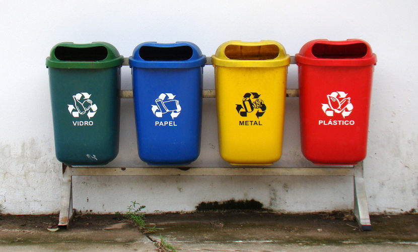
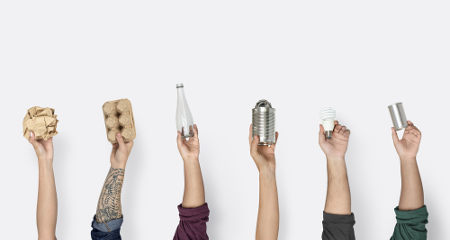
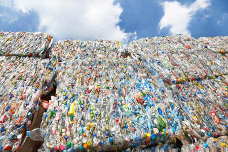

LIXO RECICLAEL
A reciclagem é um processo por meio do qual objetos já utilizados são transformados em matéria-prima para a criação de um novo produto. Na reciclagem, conseguimos reinserir um resíduo no ciclo produtivo, o que tem um impacto muito positivo no meio ambiente.
Importância da reciclagem
Como vimos, a reciclagem garante que resíduos sejam transformados em matéria-prima para a fabricação de um novo produto. Desse modo, o resíduo não será lançado no ambiente nem será necessário captar nova matéria-prima. Esse processo, portanto, garante a redução do lixo em nosso planeta e também uma diminuição da utilização dos recursos naturais, que muitas vezes não são renováveis. Além disso, devemos destacar a importância da reciclagem para a geração de empregos.
Ao separar o lixo que pode ser reciclado, estamos ajudando o meio ambiente
Ao separar o lixo que pode ser reciclado, estamos ajudando o meio ambiente
→ Tipos de reciclagem
Vários materiais podem ser reciclados, e as técnicas utilizadas para isso dependem do produto que será usado no processo. Os principais tipos de reciclagem são:
Reciclagem do papel: nesse processo são reciclados, por exemplo, jornais, revistas, caixas de papelão e embalagens de papel. Pode ser feita por processo industrial ou doméstico, por meio de processos que se baseiam na formação de uma pasta com o papel que será reciclado.

Reciclagem do plástico: nesse processo são reciclados, por exemplo, garrafas PET e embalagens plásticas. O plástico pode ser reciclado de três formas básicas: reciclagem mecânica, química e energética.
Garrafas PET e embalagens podem ser recicladas
Garrafas PET e embalagens podem ser recicladas
Reciclagem do metal: nesse processo são reciclados, por exemplo, latas de alumínio e de produtos alimentícios. O material será derretido.
Reciclagem do vidro: nesse processo são reciclados, por exemplo, potes de alimentos, garrafas e cacos de vidro. O vidro será submetido a altas temperaturas.
Leia também: Tempo de decomposição do lixo
→ Cores da coleta seletiva
Cor da lixeira indica o material que deve ser depositado

Você já deve ter percebido lixeiras de cores diferentes nas ruas brasileiras ou em determinados locais. Essas cores representam o material que deve ser colocado em cada uma delas, garantindo, desse modo, a coleta seletiva e separando o que pode ser reciclado daquilo que não pode. As cores da coleta seletiva, de acordo com o Conselho Nacional do Meio Ambiente, são:
AZUL: papel/papelão
VERMELHO: plástico
VERDE: vidro
AMARELO: metal
PRETO: madeira
LARANJA: resíduos perigosos
BRANCO: resíduos ambulatoriais e de serviços de saúde
ROXO: resíduos radioativos
MARROM: resíduos orgânicos
CINZA: resíduo geral não reciclável, misturado ou contaminado não passível de separação

A maioria das cidades já possui coleta seletiva. Entretanto, se na sua cidade não houver esse serviço, isso não deve ser motivo para deixar de fazer a separação do material que pode ser reciclado. Assim que realizar a separação, basta entrar em contato com a Cooperativa de Reciclagem ou Associação de catadores mais próxima de sua residência.